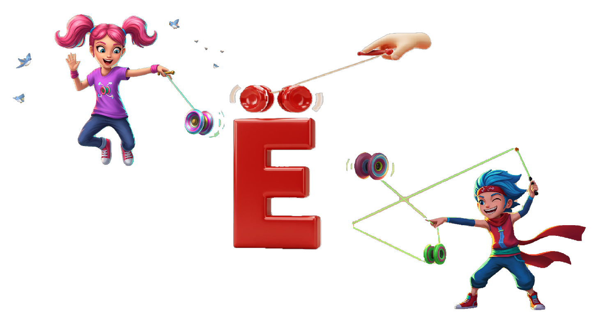

| Letter | Handwriting | Name (RU) | Sound [IPA] | Similar English Sound |
|---|---|---|---|---|
| А а | А а | а | [a] | father |
| Е е | Е е | е | [je], [e] | yes / met |
| Ё ё | Ё ё | ё | [jo], [o] | yo-yo / more |
| И и | И и | и | [i] | machine |
| О о | О о | о | [o] / [a] | more |
| У у | У у | у | [u] | root |
| Ы ы | Ы ы | ы | [ɨ] | deep "i" (between "bit" and "roses") |
| Э э | Э э | э | [ɛ] | red |
| Ю ю | Ю ю | ю | [ju], [u] | universe / you |
| Я я | Я я | я | [ja], [a] | yacht / father |
Ё: The Yo-yo letter

- Ё looks like a fancy E with two dots on top.
- It is pronounced [yo] as in "yo-yo ".
- When you see the letter with the dots, remember the image of yo-yos being played by a master Yo-yoists.
- Ё is always stressed in a word, so it sounds like "yo " every time.
Note: In many printed texts the two dots of Ё are often omitted and the letter is written as Е. Native speakers know the correct pronunciation from context. For new learners, it’s
best to keep the dots. For example,
ёлка vs. елка ("Christmas Tree ") It is often printed without dots but with the same pronunciation [yolka].
И: EEE...

- Shape: Think of a rollercoaster track slanting down with two support pillars on the sides.
- Sound: Like "ee " in see or machine (hold it: eee)
- Articulation tips: Lips spread (small smile), jaw slightly open, tongue high and forward.
- Softening: И usually makes the preceding consonant soft (palatalized), e.g., ми, ли, ни.
Common pitfalls: Don’t shorten to English "ih. " Don't add y at the start (not yee). Keep it a long, pure "ee. "
Ы: eh-uh

- Shape: When you see the vertical line, picture a cane. The letter holding it feels a bit off and sighs "iuh. "
- Sound: Ы does not have an exact English equivalent (between "bit" and "roses")
- Not Softening: Does not soften the preceding consonant. Pairs with the softening И.
Э: Eh?

- Shape: Looks like a big round ear Э; think of a person cups a hand to the ear and says “eh? I can't hear you.”
- Sound: Short eh /e/ — like the vowel in bet, met
- Not Softening: Э does not soften the preceding consonant. It’s the "hard" counterpart to Е.
- Word examples: это (EH-to, “this/it is”), эхо (EH-kho, “echo”), этаж (eh-TAZH, “floor/storey”), мэр (mehr, “mayor”), Мэри (MEH-ree, “Mary”).
Ю: You letter

- Letter shape: Looks like a hinged mirror; a woman is looking into it. Think: the letter “You” is a mirror—who’s in the mirror? YOU. That’s the sound.
- Sound: yu — /ju/ at word start/after vowels/Ь; after consonants it softens the consonant (e.g., лю, ню).
- Softening effect: After a consonant, Ю usually softens the preceding consonant: люкс, тюль, люблю.
Ё: The Yo-yo letter

- Letter: Я (means “I” in Russian). It loves looking at itself in the mirror, and luckily its neighbor Ю is a mirror!
- Mnemonic image: Я admiring itself
- Sound: ya — /ya/ at word start/after vowels/Ь; after consonants it softens the consonant and gives /ʸa/ (e.g., мя, ня, ля).
- Softening effect: After a consonant, Я usually softens the preceding consonant: мясо, ряд, мяч.
Riddle: You (Ю) and Ya (Я) are the last letters of the Russian alphabet. Я likes looking at itself in the mirror, and its neighbor Ю is a mirror.
Guess: When the last letter of the Russian alphabet looks at its neighbor, who/what does it see?
Guess: When the last letter of the Russian alphabet looks at its neighbor, who/what does it see?
Riddle Answer: English letter R!

Reading Practice
Cognates & loanwords
- шофёр — chauffeur/driver
- дирижёр — conductor
- сёгун — shogun
- Мёбиус — Möbius
- интерне́т — internet
- иде́я — idea
- и́мпорт — import
- и́ндекс — index
- инжене́р — engineer
- Нет распространённых заимствований на «Ы». (Use syllables: мы, ты.)
- экзаме́н — exam
- э́кспорт — export
- экологи́я — ecology
- эконо́мика — economy
- электро́н — electron
- эне́ргия — energy
- эффе́кт — effect
- юри́ст — jurist/lawyer
- ю́мор — humor
- Юпи́тер — Jupiter
- юнио́р — junior
- ювели́р — jeweler
- я́хта — yacht
- ягуа́р — jaguar
- як — yak
- ярд — yard (unit)
- Я́ва — Java (island)
- зоопа́рк — zoo
- зо́на — zone
- журна́л — magazine
- пижама
- борщ